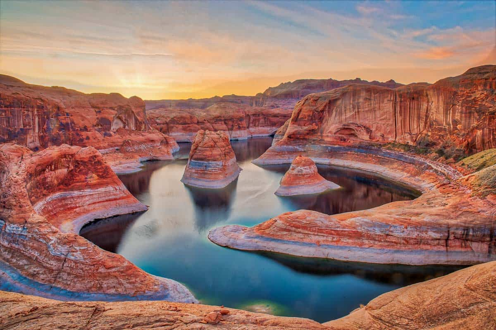

Utah, located in the heart of the American West, is a state known for its dramatic landscapes, rich cultural history, and outdoor recreation. From the red rock formations of Arches and Zion National Parks to the majestic peaks of the Wasatch Range, Utah offers a stunning blend of natural beauty and adventure.
Utah is a breathtaking tapestry of natural wonders, where red rock canyons, towering arches, and snow-capped peaks create a landscape of awe-inspiring beauty. From the surreal formations of Bryce Canyon to the vast serenity of the Great Salt Lake, Utah’s diverse terrain and vibrant colors make it a magnificent haven for adventurers, dreamers, and nature lovers alike
Here is an image of the beauty of Utah
Visit the Utah wildlife websit for more information